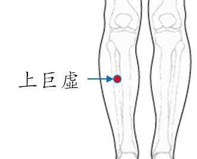

【穴位名稱】: 上巨虛 (ST37)

【治療症狀】: 便祕 腹脹 腹瀉 急性腸胃炎 腸功能紊亂 結核性腸炎(拉肚子) 乳房疼痛 乳炎、乳癱 周圍性顏面神麻痺 顏面神經痙攣 肩痛不舉 肋膜炎 面神經麻痺
【取穴位置】: 小腿前外側，外膝眼 (犢鼻)下6吋。脛骨前緣外一橫指 (中指)處。當足三里直下3吋，脛骨前肌中。《靈樞·本輸》：「復下三里三寸。」
【針刺方法】: 直刺1～2吋。艾炷灸5～7壯，艾條灸10～20分鐘。
回前頁